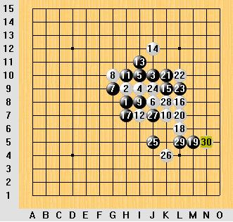
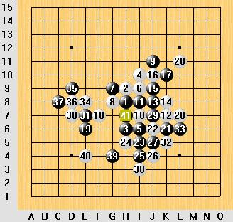
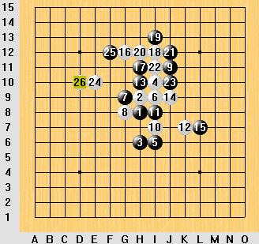

第2届全国五子棋团体赛——了却夙愿（戴晓涵）
#1 第2届全国五子棋团体赛——了却夙愿（戴晓涵） 作者：有志青年 发表时间：2008-6-17 16:59:14
【有志注：本文由2008年全国团体赛冠军浙江队的选手戴晓涵（YeYuwzq）所写，大家可能比较熟悉他的自主类规则吧】
团体赛后打算封棋了，真担心最后一战出丑~~ 大鱼倒善解人意，事先在论坛把我瞎吹一番，好方便我光荣下岗，就是天知道是不是顺便让我帮世界冠军分担下大家的注意力？
到浙江WGLS跟我说完整的高考加分政策是前12名都加…… faint，简直就是在描述浙江未来将全民五子棋。
接着我跟FCLS，TTLS到神龙山庄闭关练棋。FCLS的RP大爆发，溪边洗衣服还能捞到5块钱~~ 然后被冲走了1只袜子……
赛前练习可不像网上乱下，FCLS坚决要下棋赌钱给大家施加压力~~ 虽然FCLS最终一盘没赢…… 然后是斗地主赌钱，也是FCLS坚持的，也因此FCLS的荷包一溃千里… 神龙山庄的日子，我跟TTLS真正做到了我们请客FCLS掏钱…
团体赛很欣喜除了老面孔还看到不少新面孔。 棋情，拆棋疯子，网上传言其以猖狂而著称的，但现实中好谦逊的说，跟他相处的日子感觉蛮轻松。小沈LS网上还像个孩子，网下可是又高又帅，呵呵，看来小孝LS想下棋恐怕非先过MM这关不可。李鹏LS也那么文质彬彬的，惭愧~ 他就是莫名其妙来找我寻衅的家伙！？还有好多值得一提的LS，水平有限描述不来~~~ 呵呵
BUT，轻松总是短暂的。
石家庄的食物真是~~~ 让人无语，就像住的那小公寓一样## 吃不好睡不好怎么搞啊，虽然这听起来就是个借口，但我已经暗暗决心以后没法吃饱睡爽的比赛坚决不去比……
大鲸鱼的诅咒——冷门之王

到第10手都走得飞快，明显队手有研究吗~~~ 不过这棋型怎么感觉像在考黑如何胜，（表演的机会来了！？笑）没多想走到15手，开始长考~~~ 半小时后再也笑不出来了，白必胜…寒！坚持表演最强防到29手投降…
事后才知道大鱼那帖子真发挥了影响力，WLS又雪上加霜，再加上诸多必然偶然的因素，大鱼将冷门之王传位给我了，苦啊！！
棋情风尘LS的研究+没状态地我=连任冷门之王！？

大概因为石家庄饮食的影响，中午又没法好好的睡眠休息。我对自己的状态真无语了，21，23算本盘最后的亮点了，24强防，25原本非常非常想G7然后右下决一死战的，（后悔啊，郁闷啊！我的冲劲呢？）但我实在无法计算清楚之后种种可能的防御进攻，最终选择了慢慢控制。就这样一路控到35，白防御非常顽强，强得令我心升寒意，哪怕白确确实实全无机会…… 尽管~~37我有种强烈的预感只要中间活3，左上做一手绝对的100%必杀。但还是选择了继续郁闷白，白38依然老老实实防，一阵绝望，棋情风尘LS这么强的研究要被我走和了，哪还有脸见他们？我感到我的计算力就像我的时间一样不断流逝而去，而盘面上却寸功未进。随手了39，然后才吐血发现白H3简单盖后出现了2个牵制足够让左下的进攻成为泡影——难道我要连任冷门之王！？？（事后N个人都轻松杀出来了，惭愧）
对手40！？看荆卫军LS 40手后一脸轻松样，难道白有反43，认真又算了2遍，什么都没有呀。突然想起大鱼对米兰的那盘…… 我小声对说黑VCF了，荆卫军LS以为要和棋~~~然后我重复了一遍黑VCF了，冲了一个4，荆卫军LS脸一黑，投了…………
带着复杂的心情走出赛场，既然浙江连胜2轮，第3轮恐怕非遇强队不可，但我可不指望对手再VCF不挡了，下场换人觅食补眠。
不幸的风尘LS与幸运的曹冬LS

BUT…… FCLS光顾准备黑最强23，反而把最弱23白必胜给忘了…… 悲剧！！
表演的机会——表演
#2 Re:第2届全国五子棋团体赛——了却夙愿 作者：土豆 发表时间：2008-6-17 17:03:24
哈哈，小天天
#3 Re:第2届全国五子棋团体赛——了却夙愿（戴晓涵） 作者：gerbo 发表时间：2008-6-17 22:24:06
 小天，你上次拿个马甲跟我说了很多，但我后来一次也没见你在星期六星期天上过哈，这次看见你的文章才知道要你也要退出了，什么时候可以聊下？
小天，你上次拿个马甲跟我说了很多，但我后来一次也没见你在星期六星期天上过哈，这次看见你的文章才知道要你也要退出了，什么时候可以聊下？
#4 Re:第2届全国五子棋团体赛——了却夙愿（戴晓涵） 作者：厦门小天 发表时间：2008-6-22 19:54:12
楼上你是谁？#5 Re:Re:第2届全国五子棋团体赛——了却夙愿（戴晓涵） 作者：逆刃 发表时间：2008-6-23 21:22:24
引用：
原文由 厦门小天 发表于 2008-6-22 19:54:12 :
楼上你是谁？

#6 Re:第2届全国五子棋团体赛——了却夙愿（戴晓涵） 作者：行云流水 发表时间：2008-6-23 21:23:54
LSB告诉我GWJZ防守是心理为主计算为辅的
西西，说的真不错，：）下次可以继续尝试下。
#7 Re:第2届全国五子棋团体赛——了却夙愿（戴晓涵） 作者：gerbo 发表时间：2008-6-23 23:32:36
731073675这个QQ号还是 15766915 是你吧
某天晚上偶尔遇见了你。如果记的，想以后能常联系到你，感觉是后面的那个QQ是你。
对了，当时你发了疏三打过来说这个你用了两年终结了~呵呵~不知道是否记忆起~
#8 Re:第2届全国五子棋团体赛——了却夙愿（戴晓涵） 作者：厦门小天 发表时间：2008-6-24 8:29:17
 澄清一下，1我一般用马甲下棋打牌几乎不聊天；2我从来没有跟人谈多久终结这样的话题，更不会乱传谱；3跟我同网名的很多……
澄清一下，1我一般用马甲下棋打牌几乎不聊天；2我从来没有跟人谈多久终结这样的话题，更不会乱传谱；3跟我同网名的很多……
同时能拿出疏3打谱的，多半是某胡子军成员。
#9 Re:第2届全国五子棋团体赛——了却夙愿（戴晓涵） 作者：五子酷 发表时间：2008-6-24 9:01:39
楼上的说在石家庄吃的不好睡不着，我在福建还吃不饱呢，天有热，东西比北京还贵。
#10 Re:第2届全国五子棋团体赛——了却夙愿（戴晓涵） 作者：游戏人间 发表时间：2008-6-24 12:38:04
我有个小号就叫福建小天的哈哈#11 Re:第2届全国五子棋团体赛——了却夙愿（戴晓涵） 作者：厦门小天 发表时间：2008-6-24 16:51:49
 …………大鱼不能太猥琐.
…………大鱼不能太猥琐.
#12 Re:第2届全国五子棋团体赛——了却夙愿（戴晓涵） 作者：gerbo 发表时间：2008-7-2 17:33:30
 很多小天，以后我也该名字吧，小小天
很多小天，以后我也该名字吧，小小天
#13 Re:Re:第2届全国五子棋团体赛——了却夙愿（戴晓涵） 作者：花月痕 发表时间：2008-7-2 18:17:43
引用：HOHO，经典的XTLS，经典的FCLS，希望FCLS回来也能做到他出钱，我请客
原文由 厦门小天 发表于 2008-6-24 8:29:17 :
同时能拿出疏3打谱的，多半是某胡子军成员。
#14 Re:第2届全国五子棋团体赛——了却夙愿（戴晓涵） 作者：南京小飞机 发表时间：2008-7-12 11:42:54
怎么退了？？？？#15 Re:第2届全国五子棋团体赛——了却夙愿（戴晓涵） 作者：龙之紫辰 发表时间：2009-12-7 23:57:42
 退？？？
退？？？